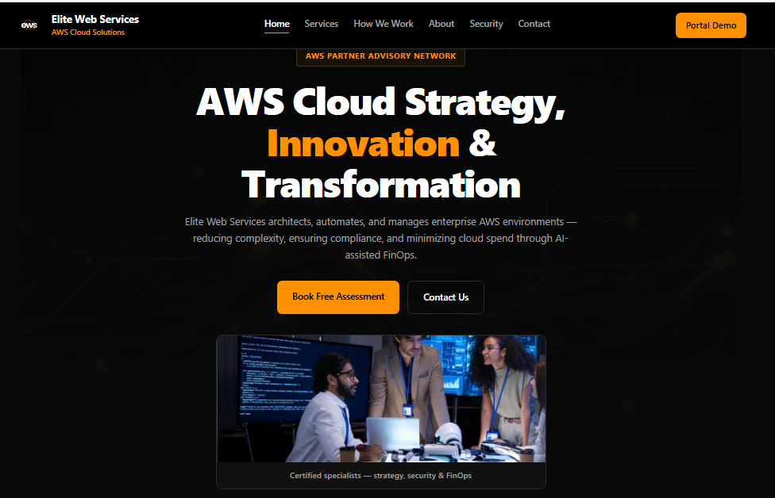

Case Study · Cloud & DevOps
Elite Web Services Cloud Solutions
Contributing to an AWS-focused cloud optimization decision platform designed to support cloud governance, security analysis, cost optimization, and actionable recommendations.

Project overview. Proprietary implementation details are intentionally not displayed.
Project area
Cloud optimization and decision support
Focus
Cloud Security, DevOps and FinOps
Year
2026
My Contribution
I contributed to the development and deployment of an AWS-native cloud optimization decision platform. My work involved cloud infrastructure, backend services, security-conscious implementation, and supporting reliable delivery of platform capabilities.
- Cloud infrastructure: Worked with AWS serverless services and infrastructure deployment using AWS SAM.
- Backend development: Contributed to backend components built with Node.js, AWS Lambda, and API Gateway.
- Cloud security and governance: Worked on capabilities related to cloud security analysis, governance, and actionable recommendations.
- Delivery and reliability: Contributed to deployment workflows and implementation practices supporting maintainability and reliable delivery.
Technologies
Confidentiality
This case study provides a high-level overview of my contributions. Proprietary source code, internal architecture, customer information, credentials, operational configurations, and other confidential company details have been excluded.